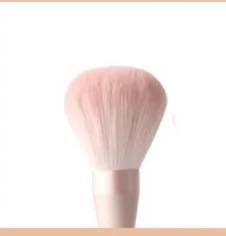
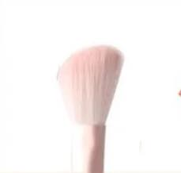
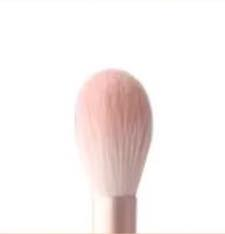
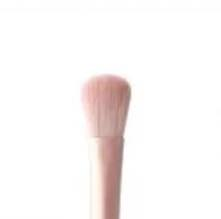
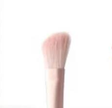

Powder paint
Loose brush wool quality is fleecy, use to dip in take loose powder most appropriate nevertheless

Grooming brush
Oblique brush used for facial contouring the best, convenient to create a sense of facial contour

Cheek brush
This brush model is small won't cause the area that cannot control cheek red, brush wool fleeciness can avoid the circumstance that appears underhand heavy

Eye shadow brush
Especially suitable for large area of eyelid spread color

Hightlight brush
Use both nose and face highlights